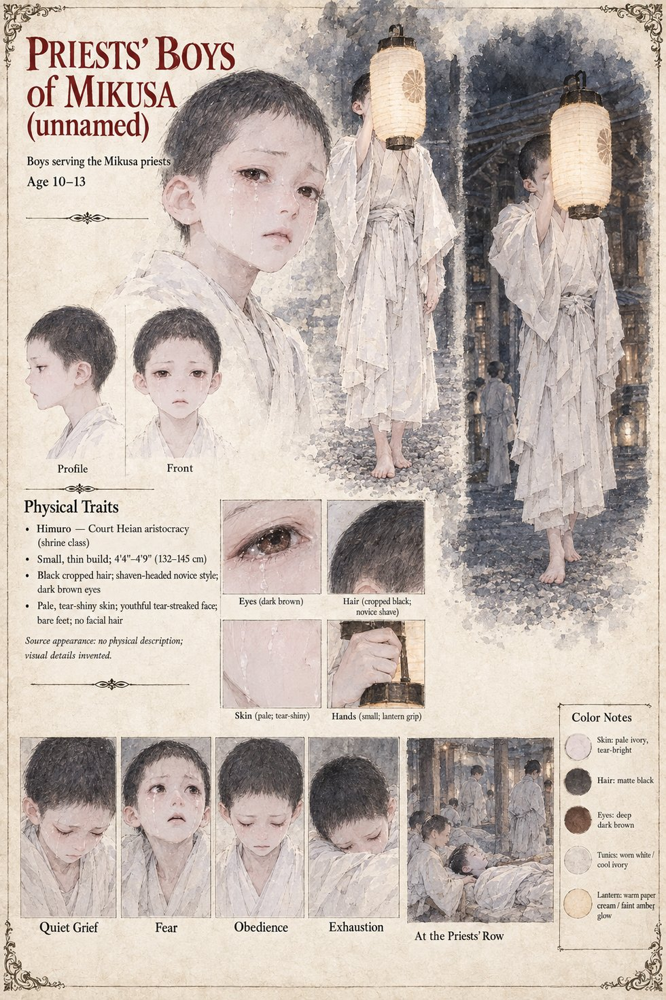

The Priests' Boys of Mikusa
Boys who serve the priests of Mikusa · unnamed · 10–13 by their sheet
Boys who serve the priests of Mikusa, and who are on the gravel on the morning of the ordeal. At the hour of the Rat a priest's boy carries the lantern in front of Higaide, crying quietly and trying to hide it. In the ordeal court he is the boy who has been told to stand with the priests and has not been told that he may go. When the Captain's palm touches the Stone and the pale grain pours out of him, one of the boys in the priests' row begins, very softly, to be sick.
The manuscript counts nine witnesses: the two officers of the Bureau, Jōkei and his three senior priests, the boy who had carried the lantern, and the Right and Left Ministers. That is one boy, though the sentence about the sickness speaks of boys in the priests' row, and whether the one who is sick is the one who carried the lantern the manuscript does not say. Years later, when Sukenori is taken to the same dais, only three of the nine witnesses of that first morning are left to see him, the others having been taken by the Law, or the Rising, or the plain exhaustion of men who have been present at something; it does not say which three.
The sheet says outright that it has no physical description to work from. Its boys, 10 to 13, are small and thin, 4 ft 4 in to 4 ft 9 in, barefoot in worn white tunics, with cropped black hair in the novice style, dark brown eyes and pale, tear-bright faces, and one of them holds up a paper lantern with a flower crest beside the shrine's pillars at night. Its expression panels run Quiet Grief, Fear, Obedience and Exhaustion, and its last scene, At the Priests' Row, draws a line of white-robed figures with a boy lying down in the foreground. Every one of these details is the sheet's own.